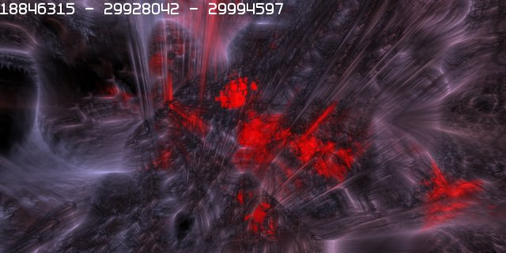
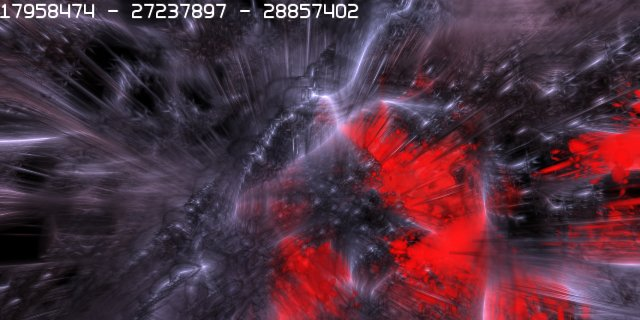
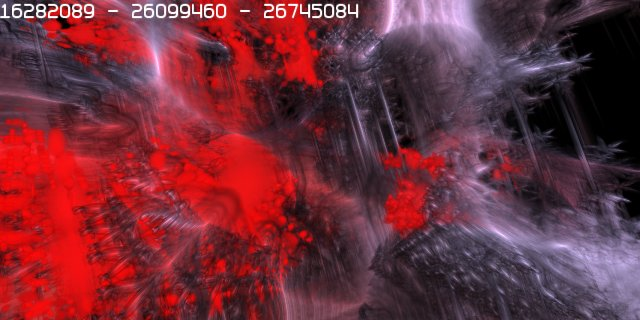
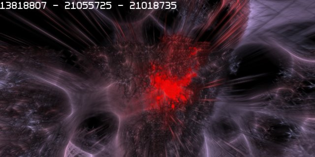

20070715 - Self Healing
As with the graphics engine, the Atom Physics Engine is directly coupled with the cellular representation of the world. This allows for some truly remarkable gameplay features, such as localized micro gravity, all objects exerting forces on surrounding objects, and self healing world and players. The screen shots below show some of the dynamic destructibility and self healing of the engine.



